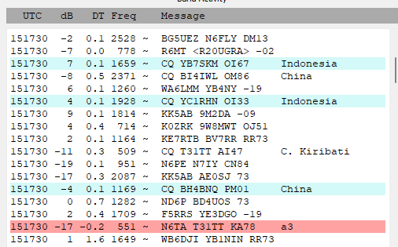

Paul,
It seems like I need to better understand what happens when
I have WSJT-X on but am not enabled for TX. I had been
calling on 30 M so my call could be on PSK reporter. But, I
changed to 20 M without any TX whatsoever. How could anyone,
especially T31TT, know I was on a new band? This is what has
me curious. I examined the ALL,txt data and is is clear what
band I was on and when and where I had transmitted. Just
weird.
I had assumed the grid locators that are sent were those
programmed into the DX computer and it may not be accurate.
But getting two different ones in the space of seconds smells
like two different computers and one could be a pirate. T31TT
says they may be on the same band with two stations that could
account for part of it. But, I just don't see how I get
called when I just arrived on a different band and never did
any TX on the new band..
Maybe I need to crack open the documentation and get lost
in it!
Thanks for the reply.
Thanks for the reply.
Al
On Thu, Jun 1, 2023 at 9:08 AM
Paul N6PSE <pauln6pse@gmail.com>
wrote:
Al, chances are that you worked a Slim as the grid KA78 is not anywhere near Central Kiribati.
The DX (or slim) may have been looking at the Reverse Beacon Network and seeing who/where he was being decoded. That or he was looking at Hamspots.net to see who was decoding him.
I sometimes get called when I have not transmitted for hours. During winter months, I often leave my WSJT-X on all night decoding 160 meters so that in the morning I can see what propagation was like and inevitably, I get called by a few JA stations in the middle of the night.
73,
Paul N6PSE
On Thu, Jun 1, 2023 at 8:43 AM Al N6TA via Chat <chat@ncdxc.org> wrote:
One other thing. Two T31TT entries in the list below have different locators. AI47 and KA78. Pirate? Regardless, how did they know to call me?Al
_______________________________________________On Thu, Jun 1, 2023 at 8:32 AM Al N6TA <al.n6ta@gmail.com> wrote:
I do not understand FT8 yet, I suppose, and would like to know how I made a contact.I was calling T31TT on 30 m FT8. No QSO and decided to look for a 9M8 on 20 FT8 to fill a slot.I go to 20 M, clear the windows and see a 9W8MWT was on the band. Suddenly, T31TT calls me out of the blue. I double click on the red line and did not get the expected result where I would reply with a signal report. Instead, I am calling him, I end up with a QSO somehow. Any explanation of how the T31 knew I was on the band when I had not transmitted?Windows show what happened. I called and got the 9W8 later.Confused,Al N6TA
Chat mailing list
Chat@ncdxc.org
http://mail.ncdxc.org/mailman/listinfo/chat_ncdxc.org


_______________________________________________ Chat mailing list Chat@ncdxc.org http://mail.ncdxc.org/mailman/listinfo/chat_ncdxc.org